19 Media 4×3
Media control: previous, play/pause, next, volume down, mute, volume up, stop, mail, file browser, and the system power, sleep and wake keys.
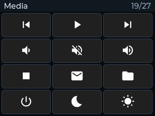
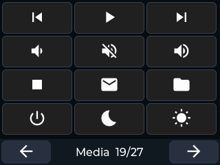
 Media and applications
Media and applicationsPages 19, 20, 21, 22, 23, 24, 25 of 27 in the LVGL interface.
Media control, Teams, Outlook, PowerPoint, the browser, the debugger and app launching. Pages 19, 20, 21, 22, 23, 24, 25, LVGL interface.
Media control: previous, play/pause, next, volume down, mute, volume up, stop, mail, file browser, and the system power, sleep and wake keys.


Microsoft Teams: mute, camera and hang up (Ctrl+Shift chords), arrows, Esc, Enter and Backspace.
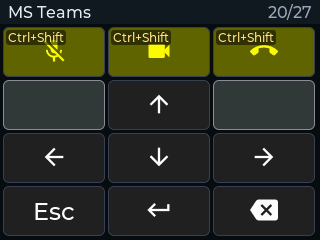

Microsoft Outlook: new mail, reply all and find, arrows, Delete, Enter and Backspace.

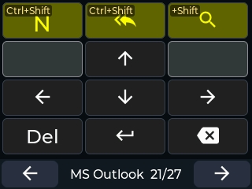
PowerPoint: start the slideshow (F5), start from this slide (Shift+F5), Esc, arrows, Page Up/Down, Home and End.
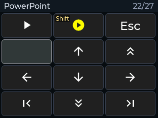
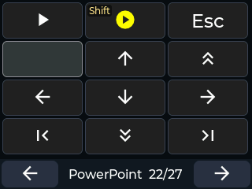
Browser control: reload (F5), hard reload, reopen tab, F7, close tab, arrows, Home, End and full screen.
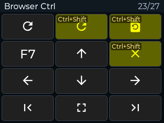
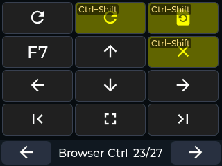
Debugger keys for an IDE: run/continue (F5), breakpoint (F9), step over (F10), step into (F11), step out (Shift+F11), restart, and the arrows.
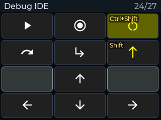
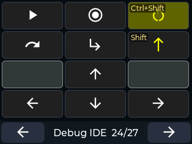
Application launchers from the consumer-control page: browser, file manager, mail, calendar, task manager and calculator.
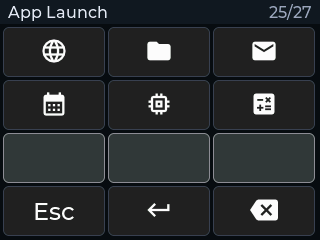
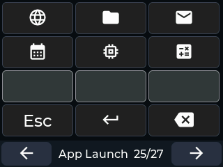